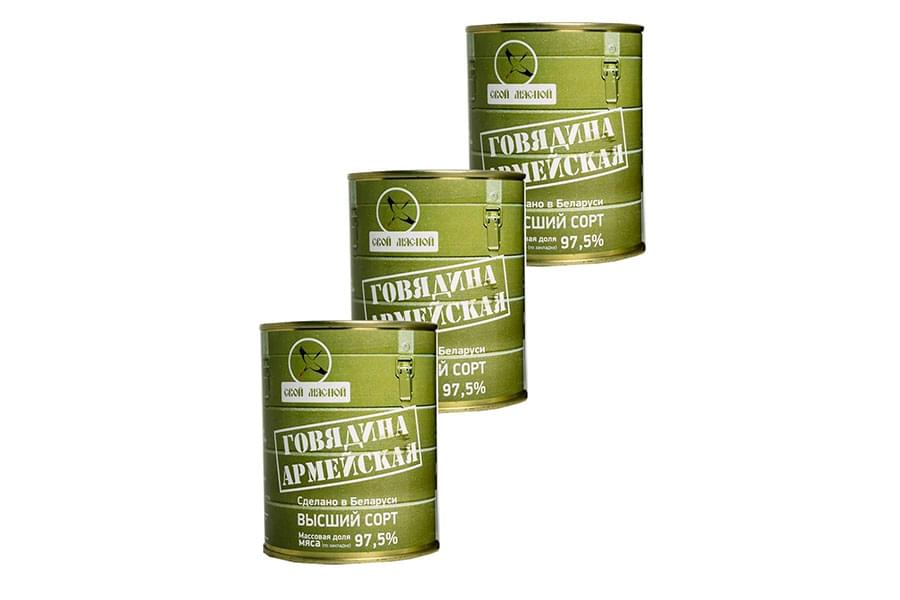

<!--#set var="title" value="Сухая этикетка • НекстПринт" -->
<!--#include virtual="/parts/header.html" -->
<section class="brand">
    <div class="container">
        <div class="title title_dry" id="dry"><h3>Сухая этикетка</h3></div>
        <div class="swiper-container mySwiper">
            <div class="swiper-wrapper">
              <div class="swiper-slide">
                <a data-fancybox="gallery" data-src="images/dist/dry-label-1.jpg">
                    
                </a>
              </div>
              <div class="swiper-slide">
                <a data-fancybox="gallery" data-src="images/dist/dry-label-2.jpg">
                    
                </a>
              </div>
              <div class="swiper-slide">
                <a data-fancybox="gallery" data-src="images/dist/dry-label-3.jpg">
                    
                </a>
              </div>
              <div class="swiper-slide">
                <a data-fancybox="gallery" data-src="images/dist/dry-label-4.jpg">
                    
                </a>
              </div>
              <div class="swiper-slide">
                <a data-fancybox="gallery" data-src="images/dist/dry-label-5.jpg">
                    
                </a>
              </div>
              <div class="swiper-slide">
                <a data-fancybox="gallery" data-src="images/dist/dry-label-6.jpg">
                    
                </a>
              </div>
            </div>
            <div class="swiper-pagination"></div>
            <div class="swiper-button-prev"></div>
              <div class="swiper-button-next"></div>
        </div>
        <p>
            <strong>Сухая этикетка</strong> подразумевает отсутствие подложки и клея. Изготавливается офсетным способом, а также методом флексографии на пленке или ролевой бумаге. Офсетный способ широко используется на рынке печати этикетки для упаковки. Данный метод печати считается самым рациональным по показателю “цена-качество”. Компания “Некст Принт” производит печать сухих этикеток с применением УФ-красок. Наша производственная линия предусматривает оборудование с ультро-фиолетовой сушкой на все секции в отдельности.
        </p>
        <p>
            <strong>Основным отличием сухой этикетки</strong> является то, что она приклеивается к продукции с помощью дополнительного клея, который подается на этикетку, либо на этикетку и на товар с применением этикетировочного оборудования. Сухая этикетка – это недорогой аналог самоклеящейся этикетке с клеем. Все этапы офсетного производства хорошо отработаны и нужно обладать достаточным опытом, знаниями и умениями, чтобы правильно управлять им. Наши высококвалифицированные специалисты обладая в совершенстве всеми деталями офсетной печати, в процессе производства стараются учитывать небольшие ограничения, накладывающимся данным способом печати. 
        </p>
        <p>
            Компания “Некст Принт” рада предложить Вам следующие виды изготовления сухой этикетки:
        </p>
        <ul>
            <li><i class="fa fa-check"></i><h5>горячее тиснение этикеток позволяет выполнять самые сложные работы с применением любой имеющейся в нашем распоряжении фольги;</h5></li>
            <li><i class="fa fa-check"></i><h5>возможна печать любой сложности, до 6-ти красок за один прогон и лакировкой ВД-лаком в линию;</h5></li>
            <li><i class="fa fa-check"></i><h5>этикетки со сплошным и выборочным УФ лаком;</h5></li>
            <li><i class="fa fa-check"></i><h5>фигурная высечка, наше инновационное оборудование позволяет производить этикетки совершенно различной геометрической формы.</h5></li>
        </ul>
    </div> 
</section>
<!--#include virtual="/parts/consultation.html" -->
<!--#include virtual="/parts/footer.html" -->